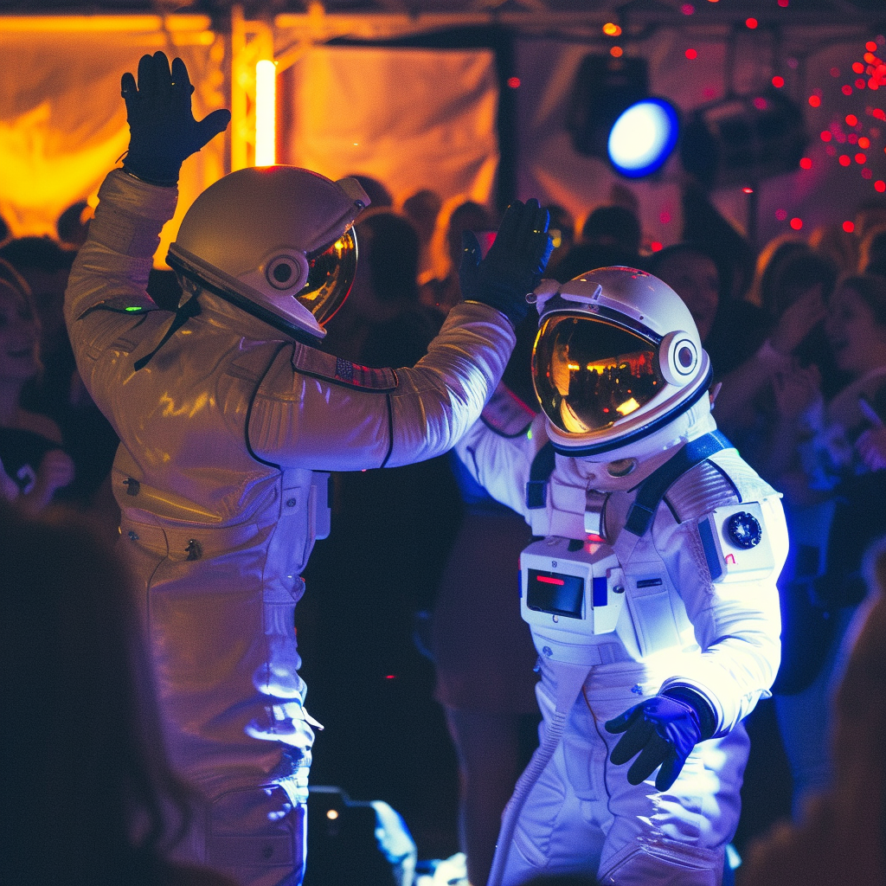

I have also directed various successful campaigns, including the QETAFF Points Project by STC, the HP New Laptop Launching Campaign, the Lacoste Perfume Campaign, and the Arla Organic Milk Campaign. I managed brand activations for Starbucks Classic Shield, Puck Cheese, Al-Rabia Tea, and NADEC Dates Drink. Throughout my career, I have demonstrated exceptional organizational skills, attention to detail, and the ability to manage multiple projects simultaneously. My success is built on strong vendor and stakeholder management, budgeting and financial planning, marketing and promotions, and excellent communication and interpersonal skills.

Branding & Magazine projects
Fueling Innovation Through My Creative Spark!
I have had the privilege of working on a diverse portfolio of branding and magazine projects for various esteemed clients. These include Saudi Readymix, where I contributed to enhancing their brand presence through strategic branding initiatives that elevated their industry standing and visibility. Additionally, I collaborated with Rassana Capital, Al Khair Capital, Lifera (PIF), Al Jomhor, and Fawasil (AL Othman) to develop compelling branding strategies that resonate with their target audiences and strengthen their market positioning, ensuring consistent brand messaging across all platforms.
My work extended to governmental entities such as the Ministry of Water, where I crafted detailed reports and visual content that highlighted critical infrastructure projects and sustainability efforts. For the Ministry of Education International Monitor, I produced insightful magazine articles and features that showcased educational advancements and policy initiatives, aimed at fostering international collaboration and knowledge exchange. At the Ministry of Civil Service, I played a crucial role in creating impactful magazine content that effectively communicated their modernization efforts and reforms, enhancing transparency and public engagement.
Social Media & Websites management
Transforming Brands with Expert Social Media & Website Management.
I have had the privilege of managing a diverse range of social media and website projects for prominent clients and organizations. These include Al Othaim Holding and its subsidiaries such as Al Othaim Riva, Al Othaim Al Urouba, and Al Othaim Charity. I successfully enhanced their online presence and engagement through strategic social media campaigns and effective website management. Additionally, I managed ELM's new website launch, optimizing user experience and functionality. For Saudi Readymix, Rassana Capital, Al Khair Capital, Lifera (PIF), Al Jomhor, and Fawasil (AL Othman), I developed and executed comprehensive social media strategies that aligned with their business objectives and targeted their key audiences.
My expertise extended to Mawan and Watania Steel, where I implemented tailored social media and website management solutions to strengthen their digital footprint and drive brand awareness. Throughout these projects, I demonstrated a deep understanding of digital marketing trends, content management, and community engagement strategies. By leveraging my skills in social media analytics and website optimization, I was able to deliver measurable results that contributed to the overall success and growth of these organizations.
TV Commercials & Radio
Crafting Impactful Stories for Leading Brands, One Broadcast at a Time.
Handled a series of high-profile TV commercial and radio projects for leading brands and organizations, showcasing my ability to deliver exceptional media content. This included creating impactful and memorable campaigns for Sabic, STC, Samsung, and Arabian Oud, effectively enhancing their market presence and brand recognition through innovative storytelling and high production quality. For Sabic, I developed commercials that highlighted their technological advancements and commitment to sustainability, resonating with a global audience. With STC, I crafted dynamic ads that underscored their leadership in telecommunications and connectivity solutions.
For Samsung, the commercials focused on cutting-edge technology and user experience, driving consumer engagement and product interest. Arabian Oud's campaigns emphasized luxury and tradition, appealing to their discerning clientele. Additionally, produced engaging TV and radio commercials for Dima Biscuits and Ajlan Bros, ensuring the messaging resonated with their target audiences by emphasizing product quality and brand heritage.